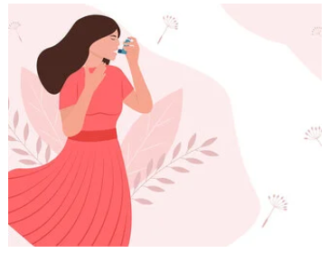

Educatie Medicala

19 JUL 2023
Ghidul alergiilor de primavara
19 JUL 2023
Va putea salva economia circulara sanatatea planetei?
19 JUL 2023Îmi vine să mănânc tot timpul, indiferent că mi-e foame sau nu. Cum
mă opresc?
19 JUL 2023
Analizele de sange pentru alergii
19 JUL 2023De ce este importanta varsta atunci cand vrei sa ai copii